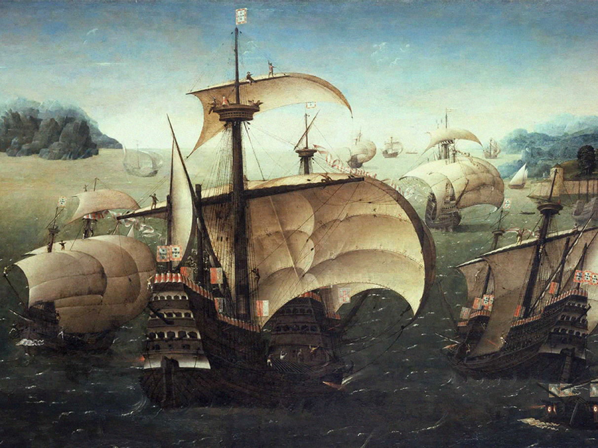

A Segunda Guerra Mundial foi o conflito mais sangrento da nossa história. De 1939 a 1945, milhões de pessoas perderam suas vidas no campo de batalha.
A política expansionista e militarista do nazifascismo provocou um novo conflito mundial. Aliados e Eixo disputaram durante seis anos a vitória na guerra.
O Brasil também participou de forma efetiva com as tropas aliadas. O final da Segunda Guerra Mundial trouxe grandes consequências para o mundo.
A Segunda Guerra Mundial ocorreu entre 1939 e 1945, resultado das tensões não resolvidas da Primeira Guerra Mundial, da crise econômica global e do crescimento de regimes totalitários como o nazismo e o fascismo.
O conflito envolveu grandes potências divididas entre os Aliados e o Eixo, e foi o maior e mais devastador da história até então.
Os principais países envolvidos foram os Aliados — como Estados Unidos, União Soviética e Reino Unido — e o Eixo — liderado por Alemanha, Japão e Itália.
Os Aliados lutavam para defender a liberdade e derrotar o expansionismo agressivo dos países do Eixo, que buscavam dominar territórios e impor ideologias autoritárias. As motivações incluíam interesses políticos, econômicos e ideológicos que impulsionaram o conflito global.
As batalhas de Stalingrado e Normandia foram decisivas na Europa, marcando a virada contra a Alemanha nazista. No Pacífico, Midway e Okinawa foram fundamentais para a vitória dos Estados Unidos sobre o Japão.
Essas batalhas mudaram o rumo da guerra, mostrando a força dos Aliados e a importância da estratégia militar.
Os Estados Unidos entraram na guerra após o ataque a Pearl Harbor, em 1941, fortalecendo os Aliados com apoio militar e econômico.
Lideraram operações importantes na Europa, como a invasão da Normandia, e no Pacífico, com a vitória sobre o Japão, incluindo o uso das bombas atômicas.
Após a guerra, os EUA se tornaram uma potência global, impulsionando a economia e liderando a criação de organizações internacionais.
A União Soviética foi fundamental na derrota da Alemanha, resistindo à invasão nazista e vencendo batalhas decisivas como Stalingrado.
Apesar das grandes perdas, avançou até Berlim, contribuindo para o fim da guerra na Europa. Após o conflito, a URSS emergiu como superpotência, influenciando a política mundial e iniciando a Guerra Fria.
As bombas atômicas lançadas sobre Hiroshima e Nagasaki, em agosto de 1945, foram decisivas para o fim da Segunda Guerra Mundial no Pacífico.
Essas ações causaram destruição em massa e forçaram o Japão a se render, encerrando o conflito. O evento marcou o uso pela primeira vez de armas nucleares em guerra e teve grande impacto político e humanitário mundial.
A Segunda Guerra Mundial mudou a geopolítica, com os EUA e a URSS emergindo como superpotências e a criação da ONU para promover a paz.
Economicamente, a guerra destruiu cidades e indústrias, exigindo reconstrução e acelerando avanços tecnológicos. Socialmente, causou milhões de mortes, expôs o Holocausto e incentivou movimentos por direitos humanos e independência colonial.
Texto sobre a segunda guerra.
